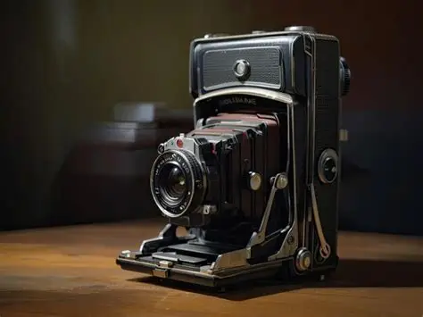

Una Cámara de fotos antigua.
Es una cámara de fuelle plegable. Se caracterizan por tener una estructura extensible en forma de acordeón (el fuelle) que conecta el cuerpo de la cámara con el objetivo
Marca:AntiguaCam
Año:1930/50